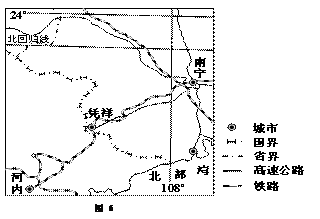
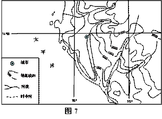
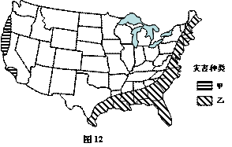

None - Fade - Slide - Convex - Concave - Zoom
选择班级
幻灯片样式
Black (default) -
White -
League -
Sky -
Beige -
Simple
Serif -
Blood -
Night -
Moon -
Solarized
随着工业化、城市化的飞速发展，耕地不断被挤占，但2004年以来，我国粮食总量仍连续增长。据此完成1～3题。
1. 近年来，我国粮食总产量连续增长的主要原因是
A. 扩大了粮食播种面积
B. 加大了农业科技投入
C. 改进了农田水利设施
D. 完善了粮食流通体系
2. 改革开放以来，下列粮食主要产区在全国商品粮食生产中的地位下降最为显著的是
A. 太湖平原
B. 洞庭湖平原
C. 汉江平原
D. 成都平原
3. 河南省和黑龙江省都是我国产粮大省。两省相比，黑龙江省粮食商品率高的主要原因是
A. 耕地面积广
B. 生产规模大
C. 机械化水平高
D. 人口较少
图1示意某流域水系分布（a）和该流域内一次局地暴雨前后甲、乙两水文站观测到的河流流量变化曲线（b）。读图1，完成4～5题。
4. 此次局地暴雨可能出现在图1a中的
A. ①地
B. ②地
C. ③ 地
D. ④地
5. 乙水文站洪峰流量峰值小于甲水文站，主要是因为甲，乙水文站之间
A. 河道淤积
B. 河谷变宽
C. 湖泊分流
D. 湖水补给量减小
读图2，完成6～7题。
6. 根据图是信息 可以推断，
A. 1月平均气温甲城市高于乙城市
B. 1月平均气温甲城市低于乙城市
C. 7月平均气温甲城市高于乙城市
D. 7月平均气温甲城市低于乙城市
7. 图中甲 乙两城市分别位于
A. 关中平原，浙闽丘陵
B. 江汉平原，山东丘陵
C. 汉水谷地，黄淮平原
D. 汾河谷地，松嫩平原
图3表示某区域在一定时期内剩余劳动力数量、人均工资的变化，以及甲、乙两类企业在该区域维持最低经济效益所能支付人均工资的变化，读图3，完成8～9题。
8. 由图3可以推断，该区域
A．T0年工业基础雄厚
B. T0¯～T1年吸引的工业企业类型最多
C. T1～T2年经历产业结构调整
D. T2年以后工业生产衰退
9. 甲、乙两类企业相比
A．甲类企业在该区域维持发展的时间更长
B．甲类企业趋向廉价劳动力区位
C. 乙类企业进入该区域的时间更早
D. 乙类企业产品的附加值较低
图4示意某小区域地形。图中等高距为100米，瀑布的落差为72米。据此完成10～11题。
10. Q地的海拔可能为
A. 90米
B. 230米
C. 340米
D. 420米
11. 桥梁附近河岸与山峰的高差最接近
A. 260米
B. 310米
C. 360米
D. 410米
36.（22分）阅读图文资料，完成下列要求。
红木家具广受人们的喜爱。目前，我国红木原材主要依赖进口。越南是红木原材的主要出口国。近年来，越南规定红木原材需经初加工方可出口。凭祥（位置见图6）是我国红木家具加工基地之一，近年与家具生产相关的企业开始在凭祥集聚。
（1）说明越南限制红木原材出口的原因。（6分）
提高原材的附加值，增加收入； 扩大就业； 保护红木（森林）资源。
（2）分析凭祥成为我国红木家具加工基地的区位优势。（10分）
（地处边境）接近原料（红木）； （我国）市场需求旺盛； （高速公路和铁路经过）交通便捷； （作为边境地区的较大城市）基础设施较完善。
（3）说明与家具生产相关的企业在凭祥集聚的原因。（6分）
接近家具厂（客户），节省运输费用； 利于企业间人员与信息的交流，提高企业创新能力； 共享基础设施，节约生产成本。
37.（24分）阅读图文资料，完成下列要求。
图7所示区域的沿海地区年降水量约50毫米，东部山地雪线高度在4480～5000米之间。自20世纪90年代，该地区开始种植芦笋（生长期耗水量较大），并发展成为世界上最大的芦笋出口区。
（1）分析图示沿海地区气候干旱的原因。（10分）
位于热带，全年气温高，蒸发旺盛； （受东部山地阻挡）处于东南信风的山地背风坡，不利降水； （势力强大的）沿海寒流的减湿作用强。
（2）推断图示沿海地区芦笋种植用水的来源。（6分）
地下水；冰雪融水（河水）。
（3）你认为图示沿海地区是否应该大力发展芦笋种植，请说明理由。（8分）
观点一：应大力发展芦笋种植。 理由：扩大就业，增加收入，促进经济发展。 观点二：不应该大力发展芦笋种植。 理由：芦笋生长耗水量大，当地本来水资源缺乏，种植芦笋使当地水资源更为紧缺。
42. (10分)旅游地理 阅读图文资料，完成下列要求。
图11所示区域中的世界文化遗产，始建于公元366年，以其现存规模大、保存完好的壁画和塑像闻名于世。近年来，游客数量不断增加，对该文化遗产构成较大威胁。
（1）简述图示区域文化遗产保护较完好的自然原因。（4分）
地处内陆，气候干旱，空气干燥（利于文物保存）。
（2）说明为保护该文化遗产应采取的措施。（6分）
合理控制游客数量； 实行淡旺季门票制； 加强监测和管理； 数字化和媒体展示等。
43，（10分）自然灾害与防治
读图12，完成下列要求。 图12示意美国本土飓风、地震灾害的空间分布。
（1）判断甲、乙自然灾害的种类并说明判断的依据。（6分）
甲为地震。（西邻太平洋）地处环太平洋地震带； 乙为飓风。东部处在北大西洋飓风侵袭路径上；南部接近飓风风源地。
（2）说明为防范上述灾害应采取的措施。（4分）
加强灾害监测和预报；制定防灾应急预案；修建避难场所等工程性防御性设施；加强防灾教育和培训。
44、（10分）环境保护
阅读图文资料，完成下列要求。
近百年来，上海市饮用水主要水源地发生了很大变化：1910年为苏州河，1928年改至黄浦江中、下游，1978年改至黄浦江中、上游，2010年改至长江青草沙（见图13）。
（1）分析上海市饮用水主要水源地变化的原因。（4分）
水环境污染严重； 城市需水量增加
（2）提出保护城市水源地应采取的措施。（6分）
控制污染源，加强水质监测和日常管理，防止水污染； 制定污染事件的应急处理方案； 加强城市水环境教育，增强公众水环境保护意识； 强化水资源管理等。